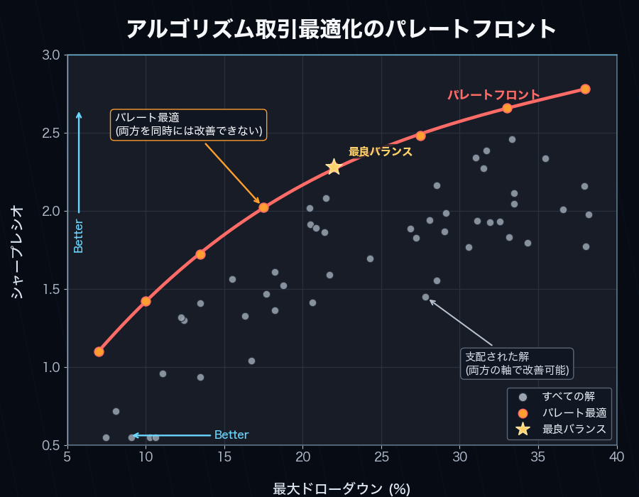
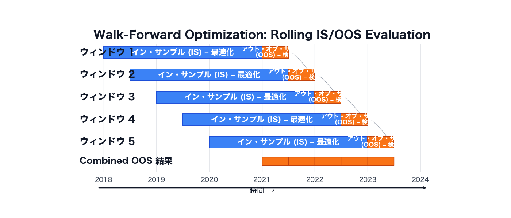

forge optimize¶
ベイズ最適化（Optuna）・グリッドサーチ・ウォークフォワード最適化など、戦略パラメータの探索と感度分析を行うコマンドグループ。
サンプル出力について
本ページの出力例は alpha-forge のソースから読み取ったフォーマットを元にしたサンプルです。実際の数値はデータと環境によって異なります。
サブコマンド一覧¶
| コマンド | 説明 |
|---|---|
forge optimize run |
Optuna によるパラメータ最適化を実行する |
forge optimize cross-symbol |
複数銘柄に対するクロスシンボル最適化を実行する |
forge optimize portfolio |
ポートフォリオの最適配分ウェイトを Optuna で探索する |
forge optimize multi-portfolio |
銘柄別戦略のウェイトを Optuna で最適化する |
forge optimize walk-forward |
ウォークフォワード最適化を実行する |
forge optimize apply |
最適化結果を戦略に適用して保存する |
forge optimize sensitivity |
最適化済みパラメータの感度分析を行う |
forge optimize history |
過去の最適化結果をスコアボード形式で一覧表示 |
forge optimize grid |
optimizer_config.param_ranges の網羅 Grid Search |
forge optimize run¶
Optuna による単一銘柄のパラメータ最適化（TPE）。--objective を 2 つ以上指定すると NSGAII による多目的最適化に切り替わります。
構文¶
引数とオプション¶
| 名前 | 種別 | デフォルト | 説明 |
|---|---|---|---|
SYMBOL |
引数（必須） | - | 銘柄シンボル |
--strategy |
必須 | - | 戦略名 |
--metric |
オプション | sharpe_ratio |
最適化対象の指標 |
--json |
フラグ | false | 結果を JSON 形式で標準出力 |
--save |
フラグ | false | 結果をファイルに保存 |
--min-trades |
int | - | 最低取引数制約を上書き（optimizer_config / 設定より優先） |
--trials |
int | - | Optuna トライアル数を上書き |
--apply |
フラグ | false | 最適化後にベストパラメータを <strategy_id>_optimized という新しい戦略 ID で保存（元戦略は変更されない） |
--yes / -y |
フラグ | false | <strategy_id>_optimized が既存の場合の上書き確認プロンプトをスキップ |
--start |
オプション | - | 最適化期間の開始日 YYYY-MM-DD |
--end |
オプション | - | 最適化期間の終了日 YYYY-MM-DD |
--max-drawdown |
float | - | 最大ドローダウン制約（%）。超過トライアルをペナルティ除外 |
--objective |
複数指定可 | - | 多目的最適化の目標（例: sharpe_ratio_maximize、max_drawdown_pct_minimize） |
--max-drawdown と --objective は同時指定できません。
リアルタイムダッシュボード¶
実行中はターミナルにライブダッシュボードが表示されます。単目的（--metric のみ）では Current/BEST のスコアボードが、多目的（--objective を 2 つ以上）では専用の Pareto Front ダッシュボードが、トライアル毎にリアルタイム更新されます。
- 多目的時の表示要素: ヘッダー（戦略・銘柄・目的関数の方向）、プログレスバー、Current Trial（各目的関数の現在値）、Pareto Front テーブル（上位 10 件 + 全件数
Top 10 / Total = N） --jsonを指定するとダッシュボードは表示されず JSON のみ出力されます。

サンプル出力（テキスト）¶
✅ 最適化完了
ベストスコア (sharpe_ratio): 1.32
ベストパラメータ: {'fast_period': 12, 'slow_period': 50}
DB 保存: run_id=opt_20260415_103021
✅ 最適化結果を保存しました: data/results/optimize_my_v1_20260415_103021.json
--apply 指定時（my_v1_optimized が未存在の場合は確認なしで作成）：
my_v1_optimized が既存の場合は上書き確認プロンプトが表示されます：
⚠️ 'my_v1_optimized' は既に存在します。上書きしますか？ [y/N]: y
✅ ベストパラメータを 'my_v1_optimized' として保存しました（元戦略 'my_v1' は変更されません）
サンプル出力（--json）¶
主なエラー¶
| メッセージ | 原因 | 対処 |
|---|---|---|
--start の形式が不正です (YYYY-MM-DD) |
日付形式不正 | 2024-01-15 形式で指定 |
--start <date> 以降のデータが存在しません |
データ不足 | forge data fetch <SYM> でデータ拡張 |
--max-drawdown と --objective は同時に指定できません。 |
両方指定 | どちらか一方を選択 |
キャンセルしました。 |
<strategy_id>_optimized 既存上書き確認で No |
--yes を付けるか、改めて承認 |
forge optimize cross-symbol¶
複数銘柄で同じ戦略を最適化し、銘柄横断で頑健なパラメータを探索する（集計方式: 平均 / 中央値 / 最小）。
構文¶
引数とオプション¶
| 名前 | 種別 | デフォルト | 説明 |
|---|---|---|---|
SYMBOLS |
引数（必須、複数） | - | 銘柄シンボルのスペース区切り |
--strategy |
必須 | - | 戦略名 |
--metric |
オプション | sharpe_ratio |
最適化対象の指標 |
--aggregation |
オプション | mean |
スコア集計方法（mean / median / min） |
--json |
フラグ | false | 結果を JSON 形式で標準出力 |
--save |
フラグ | false | 結果をファイルに保存 |
サンプル出力¶
クロスシンボル最適化を実行中: SPY, QQQ, IWM x sma_v1 (target=sharpe_ratio, agg=mean)
✅ クロスシンボル最適化完了
総合スコア (mean of sharpe_ratio): 1.20
ベストパラメータ: {'fast_period': 15, 'slow_period': 60}
個別銘柄スコア:
- SPY: 1.32
- QQQ: 1.18
- IWM: 1.10
主なエラー¶
| メッセージ | 原因 | 対処 |
|---|---|---|
警告: <SYM> のデータ読み込みに失敗しました |
データ未取得 | forge data fetch <SYM> |
エラー: 有効なデータを持つ銘柄がありません |
全銘柄データ未取得 | データ取得後に再実行 |
forge optimize portfolio¶
単一戦略を複数銘柄に適用したときの 配分ウェイト を Optuna で最適化する。
構文¶
引数とオプション¶
| 名前 | 種別 | デフォルト | 説明 |
|---|---|---|---|
SYMBOLS |
引数（必須、複数） | - | 銘柄シンボルのスペース区切り |
--strategy |
必須 | - | 戦略名 |
--metric |
オプション | sharpe_ratio |
最適化対象の指標 |
--json |
フラグ | false | 結果を JSON 形式で標準出力 |
--save |
フラグ | false | 結果をファイルに保存 |
サンプル出力¶
ポートフォリオウェイト最適化を実行中: AAPL, MSFT, GOOGL x tech_basket_v1 (target=sharpe_ratio)
✅ ウェイト最適化完了
ベストスコア (sharpe_ratio): 1.45
最適ウェイト:
- AAPL: 38.0%
- MSFT: 42.0%
- GOOGL: 20.0%
サンプル出力（--json）¶
{
"best_weights": { "AAPL": 0.38, "MSFT": 0.42, "GOOGL": 0.20 },
"best_metric": 1.45,
"portfolio_metrics": { "cagr_pct": 14.2, "sharpe_ratio": 1.45, "max_drawdown_pct": -18.0 }
}
forge optimize multi-portfolio¶
各銘柄に 個別の戦略 を割り当て、配分ウェイトを Optuna で最適化する。
構文¶
引数とオプション¶
| 名前 | 種別 | デフォルト | 説明 |
|---|---|---|---|
SYMBOL_STRATEGY_PAIRS |
引数（必須、複数） | - | SYMBOL:STRATEGY_NAME 形式のペア |
--metric |
オプション | cagr_pct |
最適化対象の指標 |
--trials |
int | 200 |
Optuna トライアル数 |
--save |
フラグ | false | 結果を JSON ファイルに保存 |
--json |
フラグ | false | 結果を JSON 形式で標準出力 |
サンプル出力¶
マルチポートフォリオウェイト最適化を実行中: GC=F, NVDA (target=cagr_pct, trials=200)
✅ マルチポートフォリオ最適化完了
ベストスコア (cagr_pct): 18.5234
最適ウェイト:
- GC=F: 55.0%
- NVDA: 45.0%
ポートフォリオメトリクス:
CAGR: 18.52%
Sharpe: 1.38
Max Drawdown: -22.10%
主なエラー¶
| メッセージ | 原因 | 対処 |
|---|---|---|
引数の形式が不正です: '<pair>' |
SYMBOL:STRATEGY_NAME 形式違反 |
GC=F:gc_optimized のようにコロン区切り |
有効なシンボル・戦略ペアが1つも存在しません。 |
全ペアでロード失敗 | データ取得・戦略 ID を確認 |
forge optimize walk-forward¶
時系列を --windows 個の連続ウィンドウに分割し、各ウィンドウで IS（イン・サンプル）最適化 → OOS（アウト・オブ・サンプル）評価を繰り返して、過学習耐性を計測する。

構文¶
引数とオプション¶
| 名前 | 種別 | デフォルト | 説明 |
|---|---|---|---|
SYMBOL |
引数（必須） | - | 銘柄シンボル |
--strategy |
必須 | - | 戦略名 |
--metric |
オプション | sharpe_ratio |
最適化対象の指標 |
--windows |
int | 5 |
ウィンドウ数 |
--min-window-trades |
int | - | IS 期間の取引数が N 件未満のウィンドウをスキップして平均から除外する。シグナル発生回数が少ない戦略でウィンドウ全体が -∞ に陥るのを防ぐ |
--json |
フラグ | false | 結果を JSON 形式で標準出力 |
IS 取引不足の早期警告と [WARNING] マーク¶
すべての IS（イン・サンプル）ウィンドウで in_sample_metric が -∞ になった場合、stderr に「シグナル不足」を示す早期警告が表示されます。また、IS 有効ウィンドウ数が全体の過半数を下回ると、サマリ行に [WARNING] マークが付与され、結果の信頼性が低い可能性を強調します。
--min-window-trades N を指定すると、IS 期間の取引数が N 件未満のウィンドウをスキップして平均から除外できます。
進捗表示（Rich プログレスバー）¶
forge optimize walk-forward の実行中は、ウォークフォワード専用の 2 段プログレスバーが表示されます。
- 外側バー: ウィンドウ全体の進捗（
<完了ウィンドウ>/<n_windows>） - 内側バー: 現ウィンドウのインサンプル Optuna 最適化の trial 進捗
各ウィンドウ完了ごとに Scoreboard テーブルへ IS / OOS スコアと OOS 取引数が追記され、ベストウィンドウ（OOS 最高）は緑色で強調表示されます。OOS 取引数が 0 件、または OOS スコアが NaN/±inf のウィンドウは FAILED 行として赤色化され、Failures カウンタに加算されます。
╭─ AlphaForge Walk-Forward ─────────────────────────────────────────╮
│ Strategy: sma_v1 Symbol: SPY Metric: sharpe_ratio (↑) │
│ Windows: 5 In-sample: 70% │
╰────────────────────────────────────────────────────────────────────╯
Windows ████████████████░░░░░░░░░░ 3/5 60% 0:01:24 < 0:00:55
└ #4 IS trial ████████████░░░░░░░░░░░░ 12/30 40% 0:00:18 < 0:00:32
╭─ Windows ─────────────────────────────────────────────────────────╮
│ Win OOS start IS OOS Trades │
│ 1 2024-04-01 1.4231 0.8912 41 │
│ 2 2024-07-01 1.2104 1.0307✓ 37 │
│ 3 2024-10-01 0.9834 -0.1521 28 │
╰────────────────────────────────────────────────────────────────────╯
Mean OOS: 0.5899 Best window: #2 (1.0307) Failures: 0
プログレスバーとダッシュボードはすべて stderr に描画されます。--json を指定しても stderr が TTY であれば進捗が表示され、stdout の純粋な JSON 出力は維持されます。stderr が非 TTY（CI、パイプ、ファイルへリダイレクト）の場合は自動で抑制されます。CI で確実に静音化したい場合はこの挙動が利用できます。
サンプル出力¶
ウォークフォワード最適化を実行中: SPY x sma_v1 (5ウィンドウ)
✅ ウォークフォワード完了
Window IS Score OOS Score ベストパラメータ
-----------------------------------------------------------------
1 1.4523 1.1024 {'fast': 10, 'slow': 50}
2 1.6210 0.8932 {'fast': 12, 'slow': 55}
⚠️ Window 3 スキップ: OOS 期間のトレード数が 0 件（統計的に無効）
4 1.3120 1.0521 {'fast': 14, 'slow': 60}
5 1.5240 0.9810 {'fast': 11, 'slow': 50}
平均 OOS sharpe_ratio: 0.987（4/5 有効ウィンドウ）
すべてのウィンドウが無効な場合：
--json 出力に追加されるフィールド¶
WFT の --json 出力には、ウィンドウ単位のフィールドに加えて、IS 側の妥当性を示すサマリフィールドが含まれます。
| フィールド | 型 | 説明 |
|---|---|---|
is_total_trades |
int (各 window 内) | IS 期間の取引数 |
is_valid_windows |
int | 有効な IS ウィンドウ数 |
all_is_invalid |
bool | 全 IS ウィンドウが -∞（取引不足）になった場合に true |
skip_reason |
string | null (各 window 内) | スキップ要因（後述） |
skip_reason は探索エージェントがウィンドウ無効の原因を判別するために使えます。
| 値 | 意味 |
|---|---|
null |
有効なウィンドウ |
"is_trades_insufficient" |
IS 期間の取引数が --min-window-trades 未満（取引頻度不足） |
"oos_metric_invalid" |
OOS メトリクスが ±∞ または NaN（シグナル品質の問題） |
"oos_trades_zero" |
OOS 期間の取引数が 0（シグナルなし） |
forge optimize apply¶
forge optimize run などで保存された結果 JSON を読み込み、best_params を戦略に適用して <id>_optimized として保存する。
構文¶
引数とオプション¶
| 名前 | 種別 | デフォルト | 説明 |
|---|---|---|---|
RESULT_FILE |
引数（必須、ファイル必須） | - | 最適化結果 JSON ファイル |
--to-strategy |
必須 | - | 適用先の戦略名 |
--yes / -y |
フラグ | false | 確認プロンプトをスキップ |
サンプル出力¶
戦略: my_v1
適用パラメータ: {'fast_period': 12, 'slow_period': 50}
このパラメータを戦略に適用しますか？ [y/N]: y
✅ 最適化パラメータを適用しました: strategy_id=my_v1_optimized
適用後パラメータ: {'fast_period': 12, 'slow_period': 50}
--to-strategy の戦略 ID に _optimized サフィックスが付き、新規戦略として保存されます。元戦略は変更されません。
forge optimize sensitivity¶
最適化済みパラメータの周辺をスイープし、わずかなパラメータ変動でメトリクスがどれだけ変わるかを評価する。過学習リスクの定量化に使用。
構文¶
引数とオプション¶
| 名前 | 種別 | デフォルト | 説明 |
|---|---|---|---|
RESULT_FILE |
引数（必須、ファイル必須） | - | 最適化結果 JSON ファイル |
--strategy |
オプション | result_file から自動 |
戦略名 |
--metric |
オプション | result_file から自動 |
評価指標 |
--steps |
int | 3 |
最良値の前後にテストするステップ数 |
--threshold |
float | 0.8 |
ロバスト判定の閾値比率 |
--symbol |
オプション | result_file から自動 |
データを取得する銘柄 |
--json |
フラグ | false | 結果を JSON 形式で標準出力 |
--save |
フラグ | false | 結果をファイルに保存 |
サンプル出力¶
感度分析を実行中: my_v1 x SPY (metric=sharpe_ratio, steps=±3)
=== 感度分析結果: my_v1 ===
ベストスコア (sharpe_ratio): 1.4523
総合ロバスト性スコア: 78.45%
パラメータ 最良値 ロバスト性 スコア推移
----------------------------------------------------------------------
fast_period 12 82.1% 1.20 1.32 1.42 1.45 1.40 1.31 1.18
slow_period 50 75.3% 1.05 1.21 1.38 1.45 1.39 1.18 0.97
主なエラー¶
| メッセージ | 原因 | 対処 |
|---|---|---|
エラー: --strategy を指定してください |
結果ファイルから戦略名取得不可 | --strategy <ID> を明示 |
エラー: --symbol を指定してください |
結果ファイルから銘柄取得不可 | --symbol <SYM> を明示 |
forge optimize history¶
ある戦略について、過去に保存された optimize_<strategy>_*.json および optimize_cross_<strategy>_*.json を読み込んで一覧表示する。
構文¶
オプション¶
| 名前 | 種別 | デフォルト | 説明 |
|---|---|---|---|
--strategy |
必須 | - | 戦略名 |
--json |
フラグ | false | 結果を JSON 形式で標準出力 |
--sort |
choice | score |
ソート順（score / date） |
サンプル出力¶
=== 最適化履歴: my_v1 (3 件) ===
日時 シンボル 指標 スコア 主要パラメータ
────────────────────────────────────────────────────────────────────────────────
20260415_103021 SPY sharpe_ratio 1.4523 fast_period=12, slow_period=50
20260410_181522 SPY sharpe_ratio 1.3210 fast_period=14, slow_period=55
20260401_092030 SPY sharpe_ratio 1.1850 fast_period=10, slow_period=45
Best: sharpe_ratio=1.4523 (20260415_103021)
パラメータ: {'fast_period': 12, 'slow_period': 50}
履歴ファイルが見つからない場合：
forge optimize grid¶
optimizer_config.param_ranges の全パラメータ組み合わせ（直積）を網羅的にバックテストする Grid Search。Optuna のサンプリングを使わず、全探索した上で Top-K を表示・保存する。
構文¶
引数とオプション¶
| 名前 | 種別 | デフォルト | 説明 |
|---|---|---|---|
SYMBOL |
引数（必須） | - | 銘柄シンボル |
--strategy |
必須 | - | 戦略名 |
--metric |
オプション | sharpe_ratio |
ソート基準のメトリクス |
--top-k |
int | 20 |
表示・保存する上位件数 |
--chunk-size |
int | 100 |
ChunkedGridRunner のチャンクサイズ |
--max-memory-mb |
float | - | RSS 監視閾値（MB） |
--max-trials |
int | 10000 |
Grid サイズがこれを超えたら確認プロンプト |
--save |
フラグ | false | 結果 DataFrame を保存 |
--save-format |
choice | csv |
保存フォーマット（csv / parquet / json） |
--apply |
フラグ | false | ベストパラメータを <strategy_id>_optimized という新しい戦略 ID で保存（元戦略は変更されない） |
--yes / -y |
フラグ | false | <strategy_id>_optimized 既存時の上書き確認プロンプトをスキップ |
--start |
オプション | - | 期間フィルタ開始日 YYYY-MM-DD |
--end |
オプション | - | 期間フィルタ終了日 YYYY-MM-DD |
--min-trades |
int | optimizer_config.constraints.min_trades（あれば） |
最低取引数で trial 除外。未指定時は戦略の optimizer_config.constraints.min_trades を自動適用（--min-trades 明示時は CLI 値が優先）。なお total_trades=0 の trial は --min-trades の有無に関わらず常に除外される |
--max-drawdown |
float | - | MDD 上限で trial 除外 |
--json |
フラグ | false | Top-K を JSON で出力 |
ゼロ取引 trial と ±inf メトリクスの取り扱い
取引が 1 件も発生しなかった trial は実運用価値がないため、--min-trades を指定していなくてもデフォルトで除外されます。また、Sharpe など ±inf を返したセルは Top-K 表で —（ダッシュ）として表示され、ソート順では NaN として最後尾に配置されます。これにより「Sharpe=∞ / total_trades=0」のパラメータが Top-1 に紛れ込む不具合は発生しません。
進捗表示（Rich プログレスバー）¶
Grid Search 実行中は Rich のリアルタイムダッシュボードがコンソールに描画されます（forge backtest run / forge optimize run と同じ UI パターン）。
- ヘッダー: 戦略 ID・シンボル・指標・総 trial 数・チャンクサイズ
- プログレスバー: 完了 trial 数 / 総 trial 数、経過時間、推定残り時間
- Scoreboard: 現在処理中の trial（
Current行: params + score）と、ここまでの最良値（Best行: trial 番号 + score + params）。ベスト更新時はBEST ★の強調表示 - フッター: 失敗 trial の累計（
Failures: N）
ダッシュボードは stderr に描画されます。--json を指定しても stderr が TTY であれば進捗が表示され、stdout には Top-K の純粋な JSON のみが書き出されます（CI/パイプライン用途）。stderr が非 TTY（CI、パイプ、ファイルへリダイレクト）の場合はダッシュボードが自動で抑制されます。失敗 trial が混在しても run は中断せず、Current 行は赤色で上書きされ Failures カウントが進みます。
╭───────────────────────── AlphaForge Grid Search ─────────────────────────╮
│ Strategy: my_v1 Symbol: SPY Metric: sharpe_ratio (↑) Trials: 1500 Chunk: 100 │
╰──────────────────────────────────────────────────────────────────────────╯
Grid Search 実行中... ━━━━━━━━━━━━━━━━━━━━━━━━━━━━━ 234/1500 (15%) 0:00:42 0:04:33
╭───────────────────────────── Scoreboard ─────────────────────────────╮
│ Trial # Score Parameters │
│ Current 234 1.4537 fast_period=14 slow_period=55 │
│ BEST ★ 198 1.6072 fast_period=12 slow_period=50 │
╰──────────────────────────────────────────────────────────────────────╯
Failures: 0
サンプル出力（完了後の Top-K テーブル）¶
Grid size: 1500 trials (chunk_size=100, max_memory_mb=None)
Grid size 12000 exceeds --max-trials 10000. Continue? [y/N]: y
... (Rich ダッシュボード表示中) ...
=== Grid Search Top-20: my_v1 / SPY (metric=sharpe_ratio) ===
fast_period slow_period sharpe_ratio max_drawdown_pct n_trades
-----------------------------------------------------------------------
12 50 1.45 -16.8 18
14 55 1.41 -17.2 16
...
主なエラー¶
| メッセージ | 原因 | 対処 |
|---|---|---|
optimizer_config が定義されていません |
戦略 JSON に optimizer_config 無し |
戦略 JSON に optimizer_config.param_ranges を追加 |
param_ranges が空です |
param_ranges が空 dict |
パラメータ範囲を 1 つ以上定義 |
指定された --metric '<name>' が結果に含まれていません |
メトリクス名タイポ等 | sharpe_ratio などの実装値を使用 |
制約を満たす trial がありません |
--min-trades / --max-drawdown で全除外 |
制約を緩和 |
共通の挙動¶
- 保存先:
--save指定時、config.report.output_path配下にoptimize_<strategy>_<timestamp>.json形式で保存。クロスシンボルはoptimize_cross_*、ポートフォリオはoptimize_portfolio_*などプレフィックスが変わります。 - DB 保存:
forge optimize runは--saveの有無にかかわらず常時SQLiteOptimizationResultRepositoryに記録します（run_idを返却）。 - Journal 連携:
config.journal.auto_recordが true の場合、最適化実行は Journal にも自動記録されます。 FORGE_CONFIG: 戦略・データ・結果の保管場所は環境変数FORGE_CONFIGが指すforge.yamlで決まります。- 終了コード: 通常
0、click.ClickExceptionで1、click.UsageErrorで2、click.Abortで1。 - Free プラン制限: Free プランでは入力データの上限日が
2023-12-31に強制され、最適化 trial 数も 50 回に制限されます（run/cross-symbol/portfolio/multi-portfolio/walk-forward/grid、apply/history/sensitivityは対象外）。gridは組合せ > 50 のとき固定 seed で 50 件にランダムサンプリングします。詳細は フリーミアム制限 を参照。